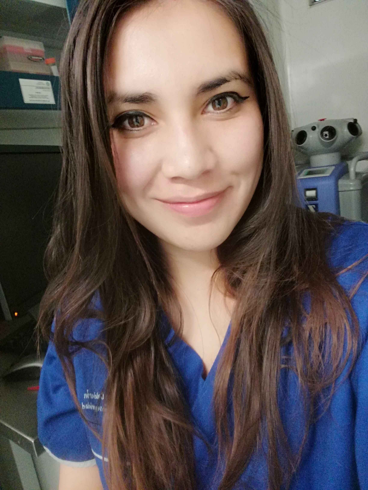

Hola, soy Jessica Camargo

He trabajado en los sectores de salud, investigación, seguridad e higiene, alimentos y medio ambiente, acumulando una experiencia diversa y enriquecedora. Actualmente elaboro informes preventivos en materia de impacto ambiental. Mi trabajo incluye el análisis de documentos como Manifestaciones de Impacto Ambiental (MIA), expedientes de la Comisión Reguladora de Energía (CRE), Licencias Ambientales Únicas (LAU), Cédulas de Operación Anual (COA) y otros documentos relevantes. Analizo planos y manejo plataformas como SIGEIA, Google Earth, SIORE e INEGI, CONABIO. Evalúo sitios en términos de impacto ambiental, asegurando el cumplimiento de las normativas aplicables y la sostenibilidad de las operaciones. Mi aprendizaje en programación lo enfocaré a la biotecnología, comenzando por la fermentación que considero totalmente un arte. Tengo varios proyects en mente.
Desarrollo Web
Aprendizaje significativo con el curso de Desarrollo Web Frontend de TecnoloChicasPRO en colaboración con la fundación ACCENTURE y Fundación Televisa, aprendí a hacer mi primer página web y la realicé sobre mi emprendimiento que son fermentos (produzco hidromiel, yogurth, etc.) y otros proyectos que contribuyeron a mi aprendizaje de Frontend Development. Pienso realizar un siguiente proyecto enfocado a la promoción de cursos ya que también cuento con una página donde en colaboración con varios ingenieros, brindamos asesorías en áreas STEM.
Biotecnología
Conocimiento en temas de biología molecular, investigación. Mis primeras prácticas las realicé en el Centro Médico Nacional "La Raza" en el laboratorio de infectología analizando muestras por técnicas de biología molecular,trabajé también en el Hospital Regional de Alta Especialidad de Zumpango (HRAEZ), trabajé en el CINVESTAV-IPN en la época COVID analizando muestras en un laboratorio de Bioseguridad nivel II, trabajé en el sector farmacéutico en un centro de mezclas nutricionales y oncológicas supervisando al personal, actualmente realizo informes preventivos en materia de impacto ambiental sector hidrocarburos.

HOBBIES
Tengo un gusto particular por los procesos fermentativos, me gusta cocinar, me gusta mucho también el mundo de las plantas y hacer mis experimentos, hacer cursos en temas diversos. Recientemente tomé "Mujeres líderes-DALIA EMPOWER", "I.A.- OZARU", "Desarrollo web Frontend-TecnoloChicasPRO". ¿Deporte? Natación. Playa, frío, sí a ir a sembrar árboles.